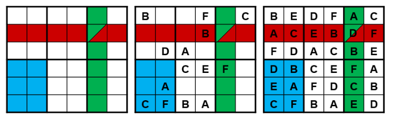

<!DOCTYPE html>
<html>
  <head>
    <title>Trial Experiment</title>


  <meta charset="utf-8">
  <meta name='viewport' content='width=device-width, initial-scale=1.0'>

  <link id="sudocss" rel="stylesheet" media="all" type="text/css" href="sudoku2x4.css">
  <link id="x2" rel="stylesheet" media="all" type="text/css" href="jsPsych/css/2x2.css">
  <link id="x3" rel="stylesheet" media="all" type="text/css" href="jsPsych/css/2x3.css">
  <link id="x4" rel="stylesheet" media="all" type="text/css" href="jsPsych/css/2x4.css">
  <script type="text/javascript" src="https://code.jquery.com/jquery-2.1.0.min.js"></script>

    <script src="jsPsych/jspsych.js"></script>
    <script src="jsPsych/plugins/jspsych-fullscreen.js"></script>
    <script src="jsPsych/plugins/jspsych-instructions.js"></script>
    <script src="jsPsych/plugins/jspsych-html-keyboard-response.js"></script>
    <link id="jscss" href="jsPsych/css/jspsych.css" rel="stylesheet" type="text/css"></link>

    <!--script type="text/javascript" src="./sudokuJS.js"></script-->
    <script type="text/javascript" src="sudoku2x4.js"></script>
    <script type="text/javascript" src="timer.js"></script>
    <script type="text/javascript" src="jsPsych/jspsych-plugin-sudoku.js"></script>
  </head>
  <script>

    var timeline = [];

    // timeline.push({
    //   type: 'fullscreen',
    //   fullscreen_mode: true,
    //   message: "Click the button to enter fullscreen mode.<br><br>",
    //   button_label: "Start"
    // });


    var welcome = {
      type: 'instructions',
      pages: [
      'During this session, you will solve letter Sudoku puzzles with different levels of difficulty. You will have two minutes to try to solve each puzzle. <br> <br> Have never solved a Sudoku puzzle before? That is not a problem; you do not need to have any prior experience or special knowledge. The next few screens will explain what Sudoku are and how to solve them. After that you will have a chance to practice.'
      ],
      show_clickable_nav: true,
    }
    timeline.push(welcome);


    var instructions = {
      type: 'instructions',
      pages: [

      "A Sudoku puzzle is a grid with several cells, that has been subdivided into several subgrids. <br> <br> </img> <br> <br> The goal of Sudoku is to enter letters in each cell, in such a way that: <br> <br> -  Each horizontal row (shown in red) contains each letter exactly once <br> - Each vertical column (shown in green) contains each letter exactly once <br> - Each subgrid or region (shown in blue) contains each letter exactly once <br> <br> In each Sudoku puzzle, several letters have already been entered (the 'givens'); these may not be changed. Your job is to fill the remainder of the grid with letters, respecting the three constraints mentioned earlier." ,


      "Let’s have a look at this puzzle and one possible way to go about the solution. <br> </img> <br>The most important thing to keep in mind is that each Line, Column and Region should contain each letter (A B C D E F) only once. <br><br> Please click NEXT to see the solution. ",

      "</img> <br><br> Step 1: <br><br> Look at Regions that already contain five letters out of six. These are Regions 1, 2 and 4. Fill the missing letters: F in Region 1 and E in Regions 2 and 4. ",

      "</img> <br><br> Step 2: <br><br> Look at the Columns and Lines that already contain five letters out of six. These are Columns 1, 5 and 6, and Line 6. Fill the missing letters: D in Column 1, E in Column 5 and Line 6, and A in Column 6. ",

      "</img> <br><br> Step 3: <br><br> Only three letters are missing now. Column 2 misses A and Line 5 misses D. When you fill them, you will see that the remaining letter in Column 4 is E. ",


      ],
      show_clickable_nav: true,
    }


    var ready = {
      type: 'html-keyboard-response',
      stimulus: 'Are you ready to solve a practice Sudoku? <br><br> Yes, I am ready! (Press C) <br><br> Not yet, I would like to read the rules once again, please! (Press R)',
      choices: ['r', 'c'],

    }

    /* Checks if the user entered R or C */

    var if_node = {
        timeline: [instructions, ready],
        loop_function: function(data){
          var data = jsPsych.data.get().last(1).values()[0];
          if(data.key_press == jsPsych.pluginAPI.convertKeyCharacterToKeyCode('c')){
            return false;
          } else {
            return true;
          }
        }
     }
     timeline.push(if_node);

     var pre_test = {
      type: 'instructions',
      pages: [
      'Now you will solve a practice Sudoku. <br> Please take a few moments to learn some technical tips.'
      ],
      show_clickable_nav: true,
    }
    timeline.push(pre_test);

   var pre_test2 = {
     type: 'instructions',
     pages: [
     'Here are a few technical tips: <br> <br> - To navigate through puzzle cells, you can use both the computer mouse and arrow keys. <br> - If you make an error, the problem cell will be highlighted in red. To correct the error, please select the problem letter and insert the correct one. <br> - As soon as you complete the puzzle, you will be presented with a new one. <br> <br> Please click NEXT to start. Take your time to get familiar with the format.'
     ],
     show_clickable_nav: true,
   }
   timeline.push(pre_test2);

    /* Sudoku pre-test WITHOUT TIMER */

    var s0 = {
      type: 'sudoku_trial',
      trial_duration: 600000,
      board_size: 'boards2x3',
      board_set: 'd',
      timer: false,
    }
    timeline.push(s0);

    var post_test = {
      type: 'instructions',
      pages: [
      'The practice session is over. You are all set to start the actual test session! <br> <br> You will have 2 minutes to solve each puzzle. You can try to solve the puzzle for as long as you can until the time is up. Along with the puzzles, you will see the timer that will show how much time is left.'
      ],
      show_clickable_nav: true,
    }
    timeline.push(post_test);

    var post_test2 = {
      type: 'instructions',
      pages: [
      'We will very much appreciate if you stay focused and will not get distracted while you are solving the puzzles. The results obtained in this study will be used to design a new psychological instrument. That is why it is crucial that they are as accurate as possible. <br> <br> We very much value your time and effort and appreciate your cooperation. <br> <br> Please click NEXT to start solving the puzzles.'
      ],
      show_clickable_nav: true,
    }
    timeline.push(post_test2);

    /* ------------- SUDOKU TRIALS ------------------- */

     var s1 = {
      type: 'sudoku_trial',
      trial_duration: 120000,  /*currently only for one minute */
      board_size: 'boards2x4',
      board_set: 'a'
     }
     var s2 = {
      type: 'sudoku_trial',
      trial_duration: 120000,  /*currently only for one minute */
      board_size: 'boards2x4',
      board_set: 'b'
     }
     var s3 = {
      type: 'sudoku_trial',
      trial_duration: 120000,  /*currently only for one minute */
      board_size: 'boards2x4',
      board_set: 'c'
     }
     var s4 = {
      type: 'sudoku_trial',
      trial_duration: 120000,  /*currently only for one minute */
      board_size: 'boards2x3',
      board_set: 'a'
     }
     var s5 = {
      type: 'sudoku_trial',
      trial_duration: 120000,  /*currently only for one minute */
      board_size: 'boards2x3',
      board_set: 'b'
     }
     var s6 = {
      type: 'sudoku_trial',
      trial_duration: 120000,  /*currently only for one minute */
      board_size: 'boards2x3',
      board_set: 'c'
     }
     var s7 = {
      type: 'sudoku_trial',
      trial_duration: 120000,  /*currently only for one minute */
      board_size: 'boards2x2',
      board_set: 'a'
     }
     var s8 = {
      type: 'sudoku_trial',
      trial_duration: 120000,  /*currently only for one minute */
      board_size: 'boards2x2',
      board_set: 'b'
     }
     var s9 = {
      type: 'sudoku_trial',
      trial_duration: 120000,  /*currently only for one minute */
      board_size: 'boards2x2',
      board_set: 'c'
     }

     var s_array = [s1, s2, s3, s4, s5, s6, s7, s8, s9];

     var sudo_trials = jsPsych.randomization.shuffleNoRepeats(s_array);


     timeline.push.apply(timeline, sudo_trials);

     var end_trial = {
      type: 'instructions',
      pages: [
      'You are done! Thank you for participating in the study. <br><br> For SurveyCircle users (www.surveycircle.com): The Survey Code is: Q3HH-G4SK-6F9N-8SWP <br><br> PollCode (www.poll-pool.com): rqaz2z63'
      ],
      show_clickable_nav: true,
    }
    timeline.push(end_trial);

     timeline.push({
      type: 'html-keyboard-response',
      stimulus: 'Press any key to quit.'
    });

    //  // exit fullscreen mode
    // timeline.push({
    //   type: 'fullscreen',
    //   fullscreen_mode: false
    // });

    jsPsych.init({
      timeline: timeline,
      on_finish: function(){ jsPsych.data.displayData(); },
        default_iti: 250
    })


  </script>
</html>
